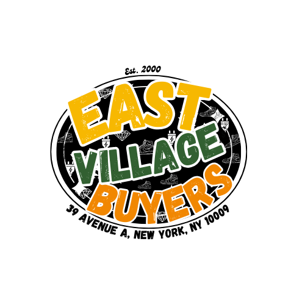

Categories
What We Buy
Browse by streetwear brand or bring your collection in — we authenticate everything and price fairly at the counter.

Supreme box logos, hoodies, tees, accessories and rare vintage pieces.
A Bathing Ape hoodies, shirts, gear and collaborations with other brands.
90s streetwear, vintage workwear, vintage tees in demand.
Balenciaga, Givenchy, Vetements street-focused designer pieces.
Branded, collaborative, vintage or rare outerwear pieces.
Band tees, vintage graphic tees, rare prints and limited releases.
What We Buy
Sell to East Village Buyers
We're a real shop at 39 Avenue A — walk in with streetwear in any condition. We authenticate everything, explain the offer in person, and pay cash the same day if you like the number. No online guessing, no hidden fees, no pressure.
How It Works
Sell in One Visit
Most folks are in and out in 20–30 minutes. We authenticate everything in front of you, grade condition, assess era (for vintage), and walk you through the numbers. You leave with cash the same day if you're happy with the offer. One piece or a collection — same respect, same straightforward process.
-
Bring your pieces and a valid ID
Come to 39 Avenue A with the streetwear items you want to sell. Anything from a single hoodie to a whole collection. Bring original tags and packaging if you have it; it helps but isn't required. Text photos to 917-608-8939 first if you're bringing a big collection.
-
We authenticate brand and condition
We'll verify authenticity — tags, stitching, printing quality, materials, construction. We grade condition honestly. For vintage pieces, we assess era and rarity. You'll see everything we're checking; we explain as we go.
-
We verify era (for vintage) and walk you through the offer
For vintage streetwear and band tees, we assess the era and rarity. We explain what makes a piece valuable. Then we discuss condition, current market demand, and our offer. No hard sell, no rushing. Shop around if you want.
-
Get paid same day
If you're happy with the offer, you walk out with cash that day. Big collections? We can arrange check payment if you prefer — just ask.